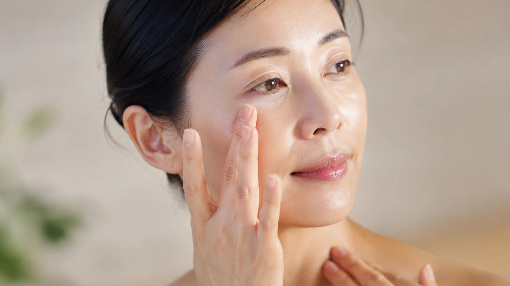

The Bojin Journal · Glow & Circulation
Crepey Skin on Your Neck and Under Your Eyes

A student ran her finger under her eye and said it felt like the tissue paper you wrap a gift in, that fine, dry crinkle. Crepey skin has a texture you can feel, not just see, and that's the clue to handling it. It isn't a wrinkle, and treating it like one is why the anti-wrinkle serum in her cabinet did nothing for it. This is a different problem with a different, gentler answer.
Paper, not fabric
Healthy young skin behaves like a good piece of fabric: stretch it, let go, and it springs flat with no memory of the crease. Thinner, drier skin behaves like paper. Crush a sheet of paper and it stays crinkled, and it crinkles worse when it's dry and brittle. Crepey skin is your skin acting more like paper than fabric, and it shows most exactly where skin is thinnest and driest: under the eyes and on the neck.
Crepiness is a texture, not a line. Paper crinkles most when it's dry and least when it's supple. You can't turn paper back into fabric by hand, but you can keep the paper soft and well-fed so it crinkles far less, and that's most of what makes crepey skin look better day to day.
This is also why crepey skin looks worse on some mornings than others. On a dry day, after a salty dinner, in a heated room, the paper is at its most brittle and every crinkle shows. Change the suppleness and you change the look, without changing the skin's actual thickness at all.
What softens paper, and what can't unmake it
Honest first: you cannot rebuild thinned skin with a hands-on habit, and the deepest crepiness, where skin is genuinely thin, has the least room to change. What a gentle release does reach is the suppleness: it supports circulation so the area looks warmer and plumper, and it helps the skin take up and hold the moisture that makes paper behave more like fabric. Softer, more supple, less papery in the moment, built by consistency.
A 5-minute suppleness routine
This one lives or dies on glide and moisture, so be generous with oil or a rich cream, and never work crepey skin dry.
- Flood the area first Press a rich moisturizer or a few drops of oil into the neck and under-eye until the skin looks satiny, not matte. You're softening the paper before you touch it.
- Under the eyes: the lightest touch you own With a fingertip only, make slow, feather-light passes outward from the inner corner toward the temple. This skin is the thinnest on your body; coax it, never drag.
- Warm the neck with flat, easy sweeps Long downward passes from jaw to collarbone with a stone or flat fingers, bringing circulation and warmth to the surface so the area looks plumper.
- Press, don't pull Anywhere it feels papery, gently press and hold with a warm palm for a breath instead of stroking. Warmth and moisture do more for crepiness than movement does.
- Seal it A final light layer of oil or cream while the skin is warm, so the suppleness you built holds through the morning.
An honest expectation
Kept up a few times a week, this can make crepey areas look noticeably more supple and less papery, especially on the days they'd otherwise look worst. The effect is gentle and temporary, and it's about how the existing skin looks and behaves, not about restoring its thickness. That's not a small thing, though. Skin that reads supple and cared-for looks years calmer than the same skin left dry and brittle.
You can't turn paper back into fabric. But keep it soft, warm, and well-fed, and it stops announcing every crinkle, which is most of what you actually see in the mirror.
Quick answers
What's the difference between crepey skin and wrinkles?
A wrinkle is a single line pressed into one spot. Crepey skin is a texture across a whole area, fine crinkling that looks like tissue paper and shows most when the skin is dry or stretched. That difference matters because a texture responds to hydration and suppleness, while a set line responds to other things.
Can bojin fix crepey skin?
It can soften how it looks in the moment by supporting circulation and helping the area take up moisture, so the skin looks plumper and less papery. It won't rebuild the thinned skin underneath, and no gentle habit does. Crepiness that comes and goes with dryness has the most room to improve; deeply thinned skin has the least.
Does drinking water help crepey skin?
Being generally hydrated helps, but topical moisture on the skin does more for the papery look than water alone. Crepey skin reads best when it's rich with a good moisturizer or oil and when circulation is bringing warmth to the surface, which is where a gentle release earns its place.
Is it too late if my skin is already crepey?
No, it's never too late to make the area look and feel more supple day to day, and that's a real, worthwhile result. Just hold honest expectations: you're improving how the existing skin looks and behaves, not turning back the clock on its thickness.
See the press-don't-pull touch
Crepey skin punishes dragging and rewards a light, warm touch, and that's easier to show than to describe. My free 3-minute video demonstrates the gentle pressure this thin skin actually wants.
Watch the free 3-min videoYu-Ting Lan is a Taiwan-based international bojin instructor and the founder of Héhé Studio. She has taught her bojin method to more than a thousand students, from complete beginners to grandmothers, across Taiwan, Hong Kong, and Malaysia.